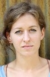
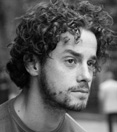
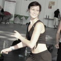

Taniec
Monika Spi¿ak
Trenuje taniec towarzyski od 8 lat. Swoje umiejêtno¶ci szlifowa³a w Studiu Tañca NARCYZ w Krakowie. Zoby³a miêdzynarodowe klasy taneczne bior±c udzia³ w turniejach w ca³ej Polsce, m.in. Mistrzostwa Polski w tañcach latynoamerykañckich. Nauka tañca sprawia jej ogromna rado¶æ, a jej marzeniem jest aby ka¿dy jej uczeñ pokocha³ taniec, tak jak ona.
Jako instruktor i choreograf specjalizuje siê w odmianie Free Style - Disco Dance. Jej choreografie i wystêpy taneczne siêgnê³y po wiele tytu³ów mistrzowskich m.in. na Otwartych Mistrzostwach Strefy Zachodniej, Otwartych Mistrzostwach Polski Po³udniowo-Wschodniej, Otwartych Mistrzostwach woj. Wielkopolskiego w Tañcu Dyskotekowym i Estradowym, Ogólnopolskim Festiwalu Tañca Nowoczesnego i Wspó³czesnego, Otwartych Mistrzostwach Polski i wielu innych.
Ma g³owê pe³n± pomys³ów. Na swoim koncie posiada równie¿ wiele choreografii tematycznych i eventowych.
Prowadzi zajêcia: Taniec towarzyski Pierwszy taniec Free Style Latino Solo Erotic Dance
Prowadzi zajêcia: Taniec towarzyski Pierwszy taniec Free Style Latino Solo Erotic Dance
Maciej Strumiñski
Pierwsze kroki taneczne stawia³ w tarnobrzeskim klubie tañca SAMBA i od tamtej pory taniec sta³ siê jego pasj±. Sportowy taniec towarzyski trenowa³ przez 10 lat w Studiu Tañca NARCYZ w Krakowie - osi±gaj±c w tym czasie liczne sukcesy na turniejach w Polsce i zagranic±.
Na swoich zajêciach zwraca uwagê nie tylko na ilo¶æ poznawanych kroków i figur tanecznych, ale przede wszystkim na jako¶æ ich wykonania. W zajêcia wk³ada ca³± swoj± energiê, zaanga¿owanie, a tak¿e szczyptê humoru, dziêki czemu treningi przebiegaj± w sympatycznej atmosferze. Jego potencja³ i zaanga¿owanie jako instruktora to niew±tpliwe atuty,
które przyci±gaj± wielu zainteresowanych tañcem na prowadzone przez
niego zajêcia. Taniec to jego pasja, któr± stara siê zara¿aæ wszystkich.
Prowadzi zajêcia: Taniec towarzyski Pierwszy taniec
Prowadzi zajêcia: Taniec towarzyski Pierwszy taniec
Svietlana Antoni

Jest absolwentk± Szko³y Baletowej w Miñsku. Ukoñczy³a presti¿ow± Moskiewsk± Akademiê Teatraln± GITIS. Tañczy³a w Teatrze Opery Baletowej oraz pracowa³a jako pedagog i choreograf w Szkole Sztuki w Miñsku
Prowadzi zajêcia: Klasyka
Prowadzi zajêcia: Klasyka
Alicja Miszczor - Jobda

Alicja Miszczor-Jobda - Ur. w 1982r. Tancerka, imrprowizatorka, instruktorka tañca wspó³czesnego, improwizacji w tañcu, gimnastyki i tañca dla seniorów, pilates taniec oraz relaksacji.
Absolwentka PPSKAK w Kaliszu (2008). Dyplomowana instruktorka improwizacji i symboliki cia³a metod± Dr Detlefa Kapperta.
Stypendystka Alternatywnej Akademii Tañca w Poznaniu (2013) Tancerka "Eksperymentalnego Studia Tañca" u Iwony Olszowskiej.
Tañczy³a i bra³a udzia³ w licznych spektaklach tanecznych oraz projektach video tañca. Od 2014r. niezale¿nie zwi±zana z Teatrem Barakah w Krakowie poprzez projekt "Obszar tañca".
W 2014 tañczy³a w spektaklu "Prze¼roczysto¶æ" w choreografii I.Olszowskiej oraz zrealizowa³a autorskie solo taneczne "Zdjêcie".
Zanim posz³a w kierunku tañca od dzieciñstwa zajmowa³a siê sztukami plastycznymi. Dlatego w tañcu wykorzystuje wyobra¼niê, a obrazy traktuje jako inspiracjê dla ruchu.
Prowadzi zajêcia: Taniec Wspó³czesny Body Conditioning
Prowadzi zajêcia: Taniec Wspó³czesny Body Conditioning
Bartek Serowik
Tancerz, choreograf i wokalista, instruktor ds. upowszechniania teatru i tañca. Swoj± przygodê z tañcem rozpocz±³ w wieku 5 lat. Swój warsztat doskonali³ pod okiem uznanych polskich i zagranicznych specjalistów. Wspó³pracowa³ z wieloma o¶rodkami kultury na terenie ca³ej Polski jako instruktor tañca i ¶piewu. Choreograf wielu zagranicznych projektów, laureat konkursów ogólnopolskich.Uczestniczy³ w wielu projektach telewizyjnych zarówno jako wokalista jak i choreograf min.:Piosenki Jacka Cygana w re¿yserii Cezarego Domaga³y, choreografia dla programu TVP1 Lato z Jedynk±. Za³o¿y³ i prowadzi Teatr Tañca Dekompresja. W ramach dzia³alno¶ci teatru wyre¿yserowa³ i opracowa³ choreografiê do nastêpuj±cych spektakli:Barbara Zdunk – Ostatnia Czarownica – spektakl biograficzny,Szukam,Frag-men-ty,Sz....sz,Wychylenia,Jak powsta³a Europa,Lustro w lustrze,Iluzja,Baton Szokolatka Mix,Projekt 3/9 kwadrat,Rozpêtanie oraz innych projektów tanecznych.Obecnie Teatr Tañca Dekompresja dzia³a w Krakowie.
Wspó³tworzy³ projekt muzyczny twórczo¶ci Bu³ata Okud¿awy. Przygotowywa³ tak¿e choreografiê i re¿yseriê wyborów Miss Polonia na szczeblu regionalnym, jak te¿ choreografie pokazów mody. Wspó³pracowa³ z Warsztatami Terapii Zajêciowej, prowadzi³ zajêcia treningu kompetencji spo³ecznych w ramach programu Aktywno¶ci Lokalnej. Wyk³adowca Uniwersytetu Rzeszowskiego na kierunku choreografia, specjalizacja taniec wspó³czesny. Spektakle, które tworzê powstaj± w oparciu o techniki tañca wspó³czesnego.
W swoich choreografiach du¿o miejsca po¶wiêcam poszukiwaniu mechanizmów ruchu cia³a, specyficznego abecad³a ruchowego, bêd±cego ¶rodkiem komunikacji w choreografii. Du¿± wagê przywi±zujê do znaczenia gestu, jego transformacji oraz jako¶ci ruchu. Stawiam na indywidualno¶æ jednostki i staram siê wydobyæ z niej to co najlepsze i najbardziej warto¶ciowe nie zatracaj±c przy tym indywiduum tancerza. W swoje choreografie wk³adam ca³± duszê i ca³ego siebie”.
Prowadzi zajêcia: Physical Dance
Prowadzi zajêcia: Physical Dance
Aleksander Kopañski

Tancerz, choreograf, aktor. Absolwent Pañstwowej Szko³y Muzycznej oraz Le¶nictwa na Uniwersytecie Rolniczym.
Przez 10 lat trenowa³ akrobatykê sportow± zdobywaj±c mistrzowsk± klasê sportow±.
W 2004 roku do³±czy³ do zespo³u ¦l±skiego Teatru Tañca w Bytomiu.
Jego debiut sceniczny mia³ miejsce w Indiach. Od tamtego czasu wystêpowa³ z teatrem w Kanadzie, Chinach, Wielkiej Brytanii, oraz krajach ca³ej Europy.
Prowadzi³ zajêcia z body conditioning oraz z tañca wspó³czesnego w ramach Miêdzynarodowej Konferencji Tañca Wspó³czesnego
i Festiwalu Sztuki Tanecznej w Bytomiu, jak równie¿ w ramach Studium Teatru Fizycznego powsta³ym przy ¦TT.
Systematycznie prowadzi warsztaty z tañca wspó³czesnego w ca³ej Polsce.
Posiada dyplom tancerza zawodowego, przyznawany przez Zwi±zek Artystów Scen Polskich,
oficjalnie honorowany przez Ministra Kultury i Dziedzictwa Narodowego.
Aktualnie wspó³pracuje z Teatrem S³owackiego, Teatrem Polskim w Bielsku-Bia³ej, Teatrem Kto i Oper± Krakowsk±.
W teatrze Hothaus odpowiedzialny za stworzenie ruchu scenicznego do spektaklu "Proces" wg. Kafki, "Ferdydurke" i "Gra snów"
Prowadzi regularne zajêcia z m³odzie¿± licealn± w ramach projektu innowacji tanecznej, której jest kierownikiem.
W ramach tej wspó³pracy przygotowuje tak¿e spektakle dyplomowe.
Prowadzi zajêcia: Taniec Wspó³czesny
Prowadzi zajêcia: Taniec Wspó³czesny
Bernadeta Zwierowska
Aktualnie studentka Akademii Górniczo Hutniczej w Krakowie, tancerka zespo³ów baletowych Art Dance Company, Baletu Krakowskiej Akademii Tañca, Impression, instruktorka tañca pracuj±ca z dzieæmi i doros³ymi.
Naukê tañca rozpoczê³a w wieku 7 lat w Studio Baletowym przy Operze Krakowskiej. Nastêpnie kontynuowa³a edukacjê w Krakowskiej Akademii Tañca, której absolwentk± zosta³a w 2007 roku. W roku 2008 ukoñczy³a Instruktorski Kurs Kwalifikacyjny z Dziedziny Tañca Wspó³czesnego, a w czerwcu 2009 zda³a praktyczn± czê¶æ egzaminu dyplomu zawodowego tancerza przyznawanego przez Zwi±zek Artystów Scen Polskich.
Tañczy³a w wielu spektaklach oraz etiudach tanecznych m.in. "Dziadek do Orzechów", "Obud¼ siê - Minnesota blues", "Przez tê ziemiê przeszed³ Pan" festiwal Misteria Paschalia, "Pyza na polskich dró¿kach", "Zazdrosna mi³o¶æ", IX Krakowska Wiosna Baletowa "Od adepta do gwiazdy", "Opowie¶æ o zwyczajnym szaleñstwie", "Alicja po drugiej stronie lustra", "Wspomnienie", "Momenty", etiuda "The Bay", "Trzy kobiety", "Villa dei Misterii", "Chopiniana".
Uczestniczy³a w warsztatach z ró¿nych technik tañca w kraju i za granic±, Budapest Dance Theatre, Warsztatach Tañców Dworskich w Krakowie.
Prowadzi zajêcia: Modern Jazz Balet
Prowadzi zajêcia: Modern Jazz Balet
Monika Jarosz

nstruktorka jazzu, modernu, burleski. Swoj± przygodê z tañcem rozpoczê³a jako ma³a dziewczynka w Nowohuckim Centrum Kultury w Krakowie. Taniec z hobby przerodzi³ siê w pasjê, w momencie kiedy Monika pozna³a technikê jazz, modern i wspó³czesny .
Od tamtej pory rozwija intensywnie swoje umiejêtno¶ci w tych stylach tanecznych. Burleska jest dla niej oderwaniem od schematów i szablonowo¶ci.
W 2013 roku Monika otrzyma³a z wyró¿nieniem tytu³ "Instruktora Rekreacji Ruchowej ze specjalizacj± taniec jazzowy ", wydany przez Egurolla dance studio i Polsk± Akademiê Sportu. Aktualnie cz³onkini Open-minded Group i uczennica Krakowskiej Akademii Tañca L'art de la dance.
Prowadzi zajêcia: Burleska Burleska
Prowadzi zajêcia: Burleska Burleska
Fitness
Justyna Pasionek
Fitness jest dla mnie pasj±, elementem ka¿dego dnia.
Jestem osob± otwart± na ró¿norodne formy fitness. Poprzez udzia³ w szkoleniach i konwencjach wci±¿ staram siê rozwijaæ swoje umiejêtno¶ci oraz podnosiæ kwalifikacje. Do moich ulubionych zajêæ nale¿± aerobowe æwiczenia z du¿± pi³k±, a tak¿e Pilates oraz BodyART. Zawsze staram siê nawi±zaæ dobry kontakt z osobami æwicz±cymi oraz chcê nauczyæ ich ¶wiadomego wykonywania ka¿dego ruchu. Chcê równie¿ pokazaæ æwicz±cym, ¿e fitness to nie tylko sposób na zdrowe cia³o i zgrabn± sylwetkê, ale tak¿e sposób na dobre samopoczucie i ¶wietny humor.
Prowadzi zajêcia: Pilates
Jestem osob± otwart± na ró¿norodne formy fitness. Poprzez udzia³ w szkoleniach i konwencjach wci±¿ staram siê rozwijaæ swoje umiejêtno¶ci oraz podnosiæ kwalifikacje. Do moich ulubionych zajêæ nale¿± aerobowe æwiczenia z du¿± pi³k±, a tak¿e Pilates oraz BodyART. Zawsze staram siê nawi±zaæ dobry kontakt z osobami æwicz±cymi oraz chcê nauczyæ ich ¶wiadomego wykonywania ka¿dego ruchu. Chcê równie¿ pokazaæ æwicz±cym, ¿e fitness to nie tylko sposób na zdrowe cia³o i zgrabn± sylwetkê, ale tak¿e sposób na dobre samopoczucie i ¶wietny humor.
Prowadzi zajêcia: Pilates
Magdalena Neisser
Do dzi¶ pamiêtam moje pierwsze spotkanie z Zumb±. Niesamowita energia, muzyka, wolno¶æ i rado¶æ spowodowa³y, ¿e natychmiast zakocha³am siê w tej formie fitnessu.
To zainspirowa³o mnie do zostania instruktork± Zumba Fitness po to, by zara¿aæ tym niesamowitym powerem innych ludzi.
Moje marzenie pomogli mi spe³niæ przyjaciele. Dziêki nim mogê robiæ to, co lubiê najbardziej - dawaæ ludziom rado¶æ i u¶miech, a w krokach Zumby daæ im zapomnieæ o codziennych zmartwieniach, przy okazji poprawiaj±c sylwetkê i kondycjê.
Mój instruktorski debiut rozpocz±³ siê mocnym uderzeniem - poprowadzi³am Zumbê na otwarciu Juwenaliów AGH, gdzie mia³am okazjê porwaæ do tañca prawie 300 osób. Regularnie uczestniczê te¿ w maratonach Zumby, które s± wspania³± okazj± do wymiany do¶wiadczeñ z instruktorami praktycznie z ca³ej Polski.
Prowadzi zajêcia: Zumba
Prowadzi zajêcia: Zumba
Ania „Annick” Pó³torak
Romanistka zakochana w latynoskiej kulturze i gor±cych rytmach. Tañczy³a w zespole Pie¶ni i Tañca „Bandoska”,
uczestniczy³a w wielu warsztatach fitnessowo-tanecznych (Fitness&Dance w rytmach brazylijskich - prow. Marcos de Lima, G. Halko i A. Przepióra, Karnawa³owy maraton taneczny (reggaeton, salsa, rumba) - prow. M. Saskowski - mistrz tañca towarzyskiego w stylach ST i LA, Latin Fever (samba, merengue, bachata, cha cha cha), Arriba la danza (salsa, reggaeton, jive, rumba),
Baila! (salsa, jive, tango, rumba), Don't stop dancing! (1o salsa, cha cha cha, jive, 2o reggaeton, samba, rumba), Fiesta Latina (1o salsa, cha cha cha, tango, 2o samba, rumba, jive), Sabor Latino (1o samba, bachata, jive, 2o salsa, cha cha cha, merengue), Let's Carnaval (1o cha cha cha, samba, rumba, 2o tango, contemporary, jive), Ritmo de Bom Bom (1o cha cha cha, cumbia, jive, 2o reggaeton, bachata, samba)
, Endless Summer (1o cha cha cha, contemporary, jive, 2o funky, rumba, samba), Massala Bhangra Workout - prow. Denis Thomsen, Zumbaton-Cubaton - prow. Yenny Torres Jimenez (salsa cubana - lady styling, afrosalsa, cubaton, reggaeton, bachaton) oraz zumbowych master classach i maratonach.
Prowadzi zajêcia: Zumba
Prowadzi zajêcia: Zumba
Katarzyna Zaskórska

Wieloletnia tancerka tañca towarzyskiego w obu stylach, a od 4 lat instruktor rekreacji ruchowej specjalno¶æ fitness-nowoczesne formy gimnastyki. Uczestniczka najwiêkszych miêdzynarodowych konwencji z udzia³em najlepszych zagranicznych prezenterów, dzieki którym ca³y czas rozwija swoje umieje¶ci i zdobywa nowe do¶wiadczenia i pomys³y. Prowadzi ró¿norodne zajêcia fitness: TBC, BPU, Step, DanceAerobik, Fat Burnig, Body Ball itp. Jak sama mówi: u¶miech to jej drugie imiê-gdy wchodzisz do mnie na salê idziesz po energie, zabawê i wysi³ek."
Zakwasy i dobry humor gwarantowane! ;)
Prowadzi zajêcia: BPU Zumba
Prowadzi zajêcia: BPU Zumba
Wkrótce informacje o kolejnych instruktorach
wykonanie: projektowanie stron www
© SempreTaniec.pl Wszelkie prawa zastrze¿one!